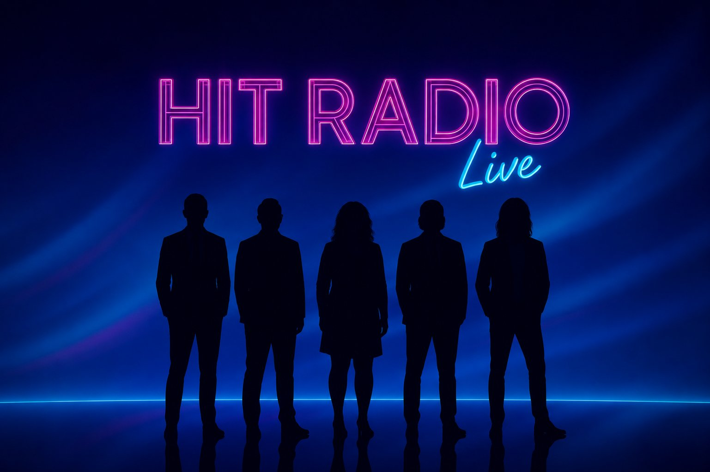

Yacht Rock · 80s · Sing-Along Hits
Hit Radio Live brings non-stop, feel-good "Best Of" themed shows to venues across the Southeast.
Featured Show
SAILING INTO
SAILING INTO
THE 80's
A show comprised of the best of Yacht Rock AND the 80's! Come celebrate both the unforgettable classics of soft rock and the sonic decadence of the 80's as Hit Radio Live takes you back. Whether it's smooth sailing or the over-the-top 80's sound, HRL has it covered!
Also available: themed shows, decade tributes, and custom sets tailored to your event.
Book Us